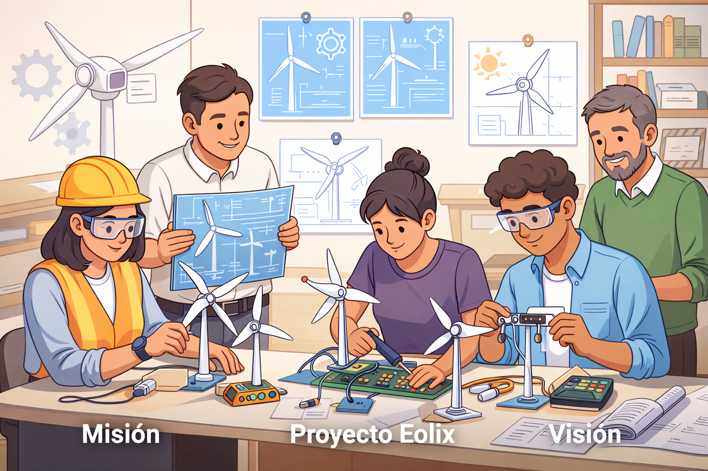

En Eolix, nuestra misión es generar y comercializar energía eólica de baja potencia mediante el desarrollo de soluciones innovadoras, eficientes y accesibles, orientadas a satisfacer las necesidades energéticas de espacios de bajo consumo, como hogares, pequeños negocios y comunidades. Nos enfocamos en promover el uso de fuentes de energía renovable como una alternativa sustentable frente a los métodos tradicionales, contribuyendo a la reducción del impacto ambiental y fomentando una cultura de responsabilidad ecológica. A través de la implementación de tecnologías limpias, buscamos optimizar el aprovechamiento de los recursos naturales, especialmente del viento, como fuente inagotable de energía. Asimismo, nos comprometemos a ofrecer servicios de calidad, confiables y económicamente accesibles, priorizando la satisfacción de nuestros usuarios y el fortalecimiento de la confianza en nuestras soluciones. Trabajamos con responsabilidad, ética y compromiso social, procurando generar un impacto positivo en la comunidad. De esta manera, en Eolix buscamos no solo brindar soluciones energéticas, sino también ser parte del cambio hacia un futuro más sustentable, impulsando el desarrollo sostenible y el bienestar de las generaciones presentes y futuras.